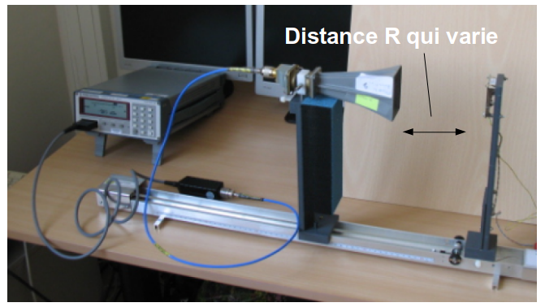

Mesure de l’atténuation distance
Présentation de l’activité
Nous allons évaluer la portée d’une liaison unidirectionnelle radiofréquence (opposée à une liaison bidirectionnelle RADAR). Ce calcul s’applique par exemple trivialement à une liaison wifi en remplaçant l’antenne “omnidirectionnelle” qui équipe un ordinateur portable par une antenne directive.
Le bilan de liaison radiofréquence traduit la distribution de la puissance reçue \(P_r\) en fonction de la puissance émise \(P_e\) :
\[ P_{r}=\frac{P_{e}G_{e}G_{r}\lambda^{2}}{(4\pi R)^{2}} \tag{1}\]
Avec \(R\) la distance entre les deux antennes, \(G_e\) le gain de l’antenne d’émission, \(G_r\) le gain du récepteur; \(\lambda\) est la longueur d’onde et \(R\) la distance entre l’émetteur et le récepteur. L’Équation 1 est nommée l’équation de Friis.
Généralement, l’Équation 1 est exprimée sous sa forme logarithmétique :
\[ P_r(dBm) = P_e(dBm) + G_e(dBi) + G_r(dBi) + 20\log_{10}(\lambda) - 20\log_{10}(4\pi) - 20\log_{10}(R) \tag{2}\]
La puissance reçue par le récepteur \(P_r\) dépend de la distance émetteur-récepteur \(R\). La puissance reçue est inversement proportionnelle au carré de la distance parcourue, ce qui se traduit par :
\[ P_{r}=\frac{K}{R^{2}} \tag{3}\]
À une distance de référence \(R_0\), l’Équation 3 entraîne :
\[ P_0 = \frac{K}{R_0^{2}} \tag{4}\]
avec \(P_0\) la puissance à la distance de référence.
En utilisant l’Équation 4, l’expression de \(K\) est obtenue. Injecté dans l’Équation 3, celle-ci devient :
\[ P_{r}=P_{0}(\frac{R_{0}}{R})^{2} \tag{5}\]
L’Équation 5 exprimée en dB devient :
\[ P_r(dBm) = P_0(dBm) + 20\log_{10}(R_0) - 20\log_{10}(R) \tag{6}\]
En représentant la variation de \(P_r(dBm)\) en fonction de \(20\log_{10}(R)\), une droite est observée. De plus, une multiplication par 2 de la distance entraîne une perte de 6 dB et une multiplication par 10 une atténuation de 20 dB.
Description de la manipulation
L’atténuation distance du radar est réalisée en déplaçant le module radar (Figure 1). Pour chaque distance, il suffit de relever la puissance reçue sur le powermeter.
